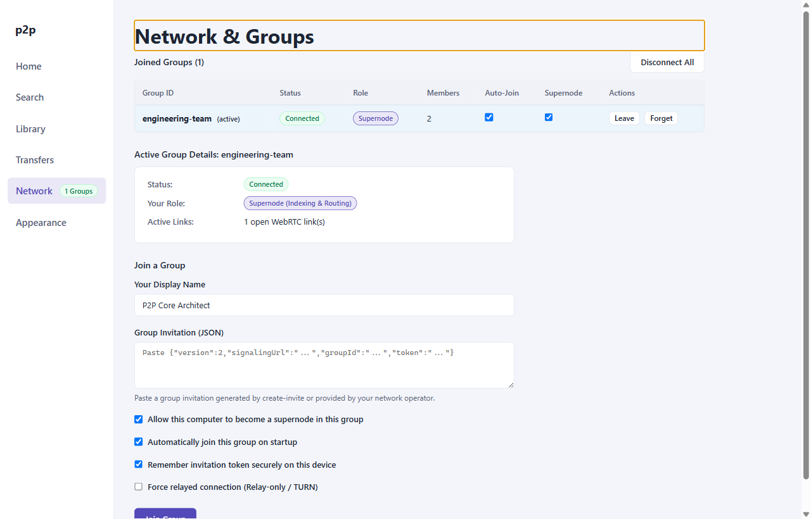

User Guide: Network & Virtual Groups
The core architectural innovation of p2p-multiple-groups is the separation of physical WebRTC transport associations from logical Virtual Groups. A single node can participate in dozens of isolated swarms simultaneously without leaking catalogs, queries, or transfer traffic across group boundaries.
1. Core Concepts
Virtual Groups & Group Keys
A virtual group represents a cryptographically isolated cluster of peers coordinated by a signaling endpoint. Every group is uniquely identified by a canonical Group Key:
For example:
ws://127.0.0.1:8787/signal#engineering-team
Two groups on the same signaling server with different groupIds are strictly disjoint. Conversely, two groups with identical groupIds hosted on different signaling servers are completely independent.
Two-Tier Roster Topology
Peers in a group occupy one of two roles:
- Supernodes: High-capacity nodes elected to aggregate inverted search catalogs from leaf nodes and route search queries.
- Ordinary Peers: Leaf nodes that maintain connections to primary and standby supernodes, conserving network overhead and CPU cycles.
2. Network View Interface
The Network & Groups view provides real-time visibility into all active memberships and local connection states:

The interface consists of three primary sections:
- Joined Groups Table: Overview of all saved and active groups, showing group ID, connection status, node role, member count, auto-join toggle, supernode eligibility toggle, and actions (
Leave,Forget). - Active Group Details Panel: Detailed telemetry for the selected group, displaying connection health, assigned primary and standby supernodes, and the count of open WebRTC links.
- Join a Group Form: Form to submit cryptographic invitations and configure display name, supernode eligibility, auto-join, credential remembering, and privacy mode.
3. Joining a Virtual Group
To join a group, you must obtain an invitation string from a signaling server operator or existing peer.
Invitation Formats
The client supports both V1 and V2 invitation payloads. Toggle between tabs below to inspect their structure:
{
"version": 2,
"signalingUrl": "ws://127.0.0.1:8787/signal",
"groupId": "engineering-team",
"token": "a1b2c3d4...base64url-token..."
}{
"version": 1,
"signalingUrl": "ws://127.0.0.1:8787/signal",
"roomId": "engineering-team",
"token": "legacy-token..."
}Join Procedure
- Navigate to the Network view.
- Under Join a Group, enter your desired Display Name (1–32 characters).
- Paste the invitation JSON string into the Invitation JSON field.
- Configure optional settings:
- Supernode Eligible: Check this if your machine has stable bandwidth and open ports to assist in indexing and routing queries for the group.
- Auto-join on launch: Check this to automatically reconnect to this group whenever the desktop application starts.
- Remember invitation securely: Saves credentials encrypted on disk via OS keychain. If unchecked, credentials are held only in memory for the current process session.
- Privacy Mode (Relay Only): Enforces TURN-only relay connections, concealing your public IP address from other peers.
- Click Join Group.
4. Credential Persistence Modes
The application supports two distinct credential storage strategies:
- Hardware-Backed Encryption (
SafeCredentialStore):- Enabled by checking Remember invitation securely.
- Tokens are encrypted using Electron's
safeStorageAPI:- Windows: Data Protection API (DPAPI) tied to your user account.
- macOS: Keychain Services.
- Linux: Secret Service API via DBus (e.g., GNOME Keyring, KWallet).
- Encrypted tokens are stored in
credentials.encunder your application data directory with restrictive file permissions (0o600).
- Session-Only Ephemeral Memory:
- Used when Remember invitation securely is unchecked or when OS keychain services are unavailable.
- Credentials exist strictly in heap memory during the active Electron session and are discarded upon exit.
5. Network Lifecycle States
The network connection for each virtual group transitions through distinct states:
| Status | Badge | Meaning | Operational Behavior |
|---|---|---|---|
disconnected |
Disconnected | Node is idle or explicitly disconnected. | No WebRTC connections or signaling sockets are open. |
connecting |
Connecting | Signaling handshake or ICE gathering in progress. | Client is negotiating SDP offers/answers over WebSocket. |
connected |
Connected | Signaling link and WebRTC mesh established. | Full search, indexing, and direct file transfers enabled. |
degraded |
Degraded | Primary supernode unreachable; standby failover active. | Read-only search available; catalog sync pending election. |
recovering |
Recovering | Signaling heartbeat interrupted; reconnect retry active. | Monotonic sequence validation prevents stale state ingestion. |
error |
Error | Fatal authentication failure or invalid token. | Sockets closed; action required (check credentials). |
6. Privacy Mode (relayOnly)
When Privacy Mode (relayOnly) is enabled:
- The WebRTC stack configures
iceTransportPolicy: 'relay'. - All peer-to-peer data channels route exclusively through designated Coturn TURN relays.
- Security Invariant: Host and Server-Reflexive (STUN) candidates are completely suppressed, preventing peer nodes from discovering your physical or public IP address.
Changing the relayOnly policy requires disconnecting all active groups first to ensure that no open direct SCTP associations remain active.
7. Leaving and Forgetting Groups
The Joined Groups table provides two distinct actions for ending group participation:
- Leave Group:
- Sends a graceful
leavemessage to the signaling server. - Tears down WebRTC data channels and SCTP associations tied to this group.
- Retains the group configuration and credentials in your local store, allowing immediate one-click re-joining.
- Sends a graceful
- Forget Group:
- Leaves the group if currently connected.
- Permanently deletes the group from
peer-state.json. - Removes encrypted credentials from
credentials.enc. - Atomic Grant Revocation: Automatically revokes access grants for this group across all shared files in your local library, ensuring zero leftover permissions.